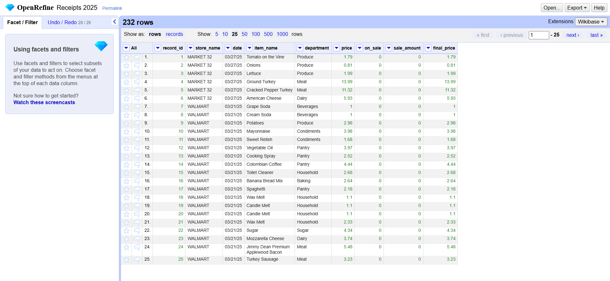
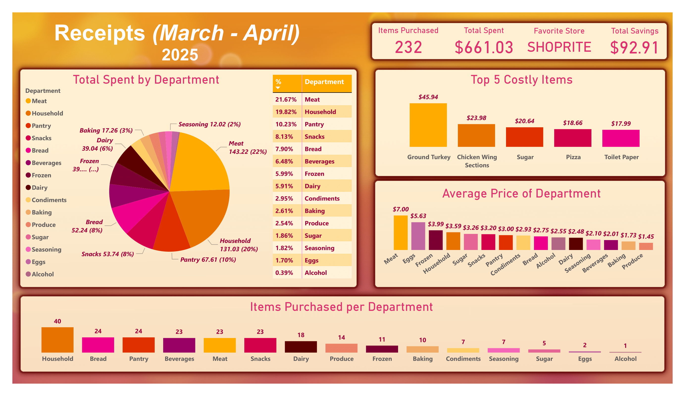

This is a personal project I started March 2025.
I was curious about how much my family and I were spending on groceries, and if there were certain items or departments that we spent a lot of money on. I decided to start a small project and collect receipts over a month to get a "snapshot" of what we were buying to better understand our spending habits.
I would like to mention that this dataset is small; It holds 9 receipts and 232 items. As the dataset is so small, it is not representative of long-term spending habits. Regardless, I was still able to harvest some incredibly useful insights even from this small data set!
Understanding the Problem
Before collecting the data, I spent about a week brainstorming what the issue was and what questions I wanted to answer. Eventually, I settled on asking a main question and a supplementary question.
Main Question: "What departments do we spend the most money on?" Supplementary Question: "What are the most expensive things we buy?"
Collecting the data
Now that I had my questions together, I began to look for ways to collect the data I needed. I knew that I would need the items, their departments and their prices at the very least.
Unfortunately, my family and I did not sign up for digital receipts, so I had to use manually enter the data and write every item down from each receipt I got. I collected 9 usable receipts from March 16th to April 27th. The small data size was suitable for this project, but for a bigger project I would highly recommend web scrapping digital receipts.
Then, I had brainstormed a couple of times on what data to write down, but it took some re-iteration to get the right amount of data. I settled on this format:
- store_name
- item_name
- department
- price (The base price of the item without any sales)
- on_sale (Which determines if the item was on sale or not)
- sale_amount (If the item was on sale, this was the amount deducted from the base price)
- final_price (price - sale)
The data model is very simple; A single relational table, which seemed appropriate for the data set's size.
With this framework, I manually wrote down every item from the receipts into a Google Sheets document and filled in each column with the information required. Each receipt had its own table so cleaning would be easier.
Once each receipt was finished, all the records were then merged to create one big table using OpenRefine.
There were inconsistencies with department names, such as "Beverage" and "Beverages" counting as two different departments. To fix this, I used OpenRefine's text facet feature to group these categories into one. I also cleaned up many other inconsistencies as well, such as giving items more consistent names. ("Sunkist Grape Soda" became "Sunkist Soda" for example).
After ensuring that all the records were clean, I also a created new column in OpenRefine, a record number using incrementing integers to ensure that each item had a unique ID before the data was processed further. This number could be useful in the future for when new data is added to the table.
Now that the data was collected, has enough information to answer my question, and is properly cleaned, I could focus on answering the question with a visualization and supplying a thorough analysis.
Data Visualization
Going back to the two questions, I brainstormed on the best ways to answer them with visualizations now that I had a proper dataset to use. I decided to use Power BI as I like the speed in which I can create beautiful-looking, interactive visualizations.
I settled mainly on a pie chart for the biggest piece of data, as I wanted most of my other information to be bar charts. The pie chart would answer my main question, therefore I ensured that it would be the biggest and most distinct chart.

Analysis and Report
The information on the top-right are some simple stats for context.
The large pie chart is the main analysis of the report. This answers the question of "What departments do we spend the most money on". This pie chart tells me that meat is the most costly department, followed by household, then pantry items. The accompanying table shows the percent of all departments and is mainly complementary information for an overall view.
The two bar graphs on the right side are the secondary analyses of the report. They answer, "What are the most expensive things we buy". The top chart shows the top 5 most costly items; I wasn't surprised to see that meat is in the top 2 spots. The bar chart under this one shows the average price of each department, which further leads me to believe that meat is indeed the most expensive department that we buy from. I was also very surprised to see eggs with such a high average.
The final bar chart at the bottom of the report rounds everything out with how many items were purchased in each department. I was surprised to see that we didn't purchase that much meat, but it was still the most costly department.
I must emphasize that this data set is very small, with only 232 items recorded. It does encompass an entire month of grocery shopping for my family, but for a truly robust and accurate report, I would recommend a bigger data set. However, this report has already provided some useful insights that can be applied right away and is sufficient for a full month report.
This analysis shows that meat is the most expensive department. Along with some other departments such as snacks and even bread, our shopping habits can be adjusted to purchase less of these items or consider alternatives to save money.